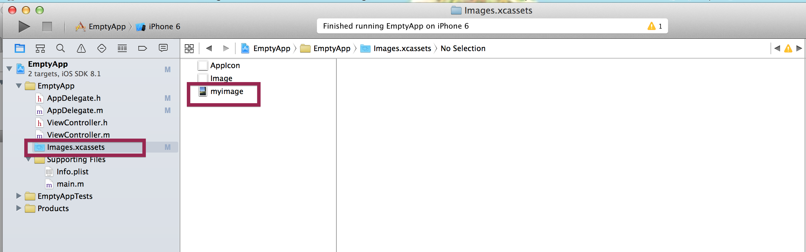

$\Large \color{red}\Omega$
This tutorial will show you how to draw Circle Rectangle/Square Oval/Ellipse on top of photo in ObjectiveC/iOS
1. Write a minimum App
A. Create header file[*.h] AppDelegate : UIResponder<UIApplicaitonDelegate>
@interface AppDelegate : UIResponder <UIApplicationDelegate>
@property (strong, nonatomic) UIWindow *window;
@end
B. In your implementation file, you only need to override one following method,
the method only set the background of window to while and makes the window visible
- (BOOL)application:(UIApplication *)application didFinishLaunchingWithOptions:(NSDictionary *)launchOptions {
self.window = [[UIWindow alloc] initWithFrame:[[UIScreen mainScreen] bounds]];
// Override point for customization after application launch.
self.window.backgroundColor = [UIColor whiteColor];
[self.window makeKeyAndVisible];
// Override point for customization after application launch.
return YES;
}
2. Draw label on your App, add the following code in previous method.
The code creates a label and add the label to subView of your UIApplication
// create simple text label
UILabel *myLabel = [[UILabel alloc] initWithFrame:CGRectMake(50, 50, 300, 300)];
[myLabel setTextColor:[UIColor redColor]];
[myLabel setBackgroundColor:[UIColor clearColor]];
[myLabel setFont:[UIFont fontWithName: @"Trebuchet MS" size: 20.0f]];
[myLabel setText:@"Supper Simple Application"];
[self.window addSubview:myLabel];
3. Load an image on your window.
A. Get an image and rename it to myimage.jpg
B. Drag the image to your Images.xcassets window (see screen shot)

C. Declare UIImageView* imageView on your header file[*.h]
D. Add the bellow code to following method
- (void)applicationDidFinishLaunching:(UIApplication *)application
self.imageView = [[UIImageView alloc]initWithFrame:self.window.bounds];
self.imageView.image=[UIImage imageNamed:@"myimage.jpg"];
[self.window addSubview:self.imageView];
3. Draw Circle, Oval/Ellipse and Rectangle/Square.
// draw circle
- (CAShapeLayer*)drawCircle:(CGPoint)location radius:(CGFloat)radius {
CAShapeLayer* shapeLayer = [CAShapeLayer layer];
UIBezierPath *path = [UIBezierPath bezierPath];
[path addArcWithCenter:location
radius:radius
startAngle:0.0
endAngle:M_PI * 2.0
clockwise:YES];
shapeLayer.path = [path CGPath];
shapeLayer.strokeColor = [[UIColor redColor] CGColor];
shapeLayer.fillColor = nil;
shapeLayer.lineWidth = 5.0;
return shapeLayer;
}
// draw oval
-(CAShapeLayer*)drawOval:(CGPoint) location semimajor:(CGFloat)semimajor semiminor:(CGFloat) semiminor{
CAShapeLayer* shapeLayer = [CAShapeLayer layer];
UIBezierPath *path = [UIBezierPath bezierPathWithOvalInRect:CGRectMake(location.x-semimajor, location.y-semiminor, 2*semimajor, 2*semiminor)];
shapeLayer.path = [path CGPath];
shapeLayer.strokeColor = [[UIColor greenColor] CGColor];
shapeLayer.fillColor = [[UIColor blackColor] CGColor];
shapeLayer.lineWidth = 1.0;
return shapeLayer;
}
// draw rectangle
-(CAShapeLayer*)drawRectangle:(CGPoint) location semiWidth:(CGFloat) semiWidth semiHeight:(CGFloat)semiHeight{
CAShapeLayer* shapeLayer = [CAShapeLayer layer];
UIBezierPath* path = [UIBezierPath bezierPath];
// start point
[path moveToPoint:CGPointMake(location.x - semiWidth, location.y - semiHeight)];
// draw lines
[path addLineToPoint:CGPointMake(location.x + semiWidth, location.y - semiHeight)];
[path addLineToPoint:CGPointMake(location.x + semiWidth, location.y + semiHeight)];
[path addLineToPoint:CGPointMake(location.x - semiWidth, location.y + semiHeight)];
[path addLineToPoint:CGPointMake(location.x - semiWidth, location.y - semiHeight)];
//[path closePath];
shapeLayer.path = [path CGPath];
shapeLayer.strokeColor = [[UIColor yellowColor] CGColor];
shapeLayer.fillColor = [[UIColor blackColor] CGColor];
shapeLayer.lineWidth = 1.0;
return shapeLayer;
}
4. Use above three methods and you can see the final output
CAShapeLayer* layerCircle = [self drawCircle:CGPointMake(100, 100) radius:60];
[self.imageView.layer addSublayer:layerCircle];
// draw oval
CAShapeLayer* layerOval = [self drawOval:CGPointMake(200, 100) semimajor:40 semiminor:20];
[self.imageView.layer addSublayer:layerOval];
// draw rectangle
CAShapeLayer* layerRect = [self drawRectangle:CGPointMake(200, 200) semiWidth:60 semiHeight:80];
[self.imageView.layer addSublayer:layerRect];